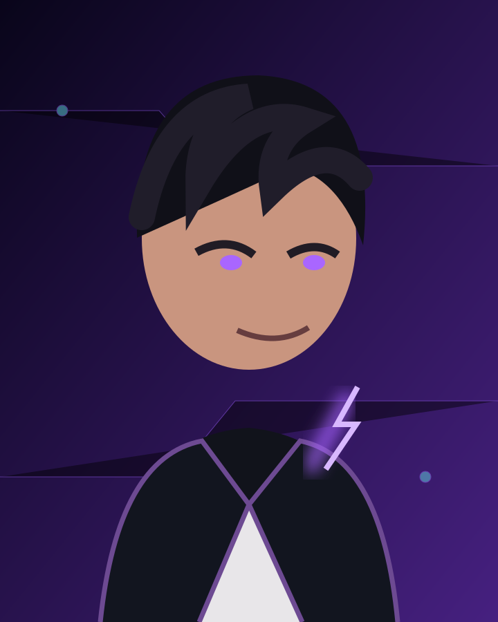
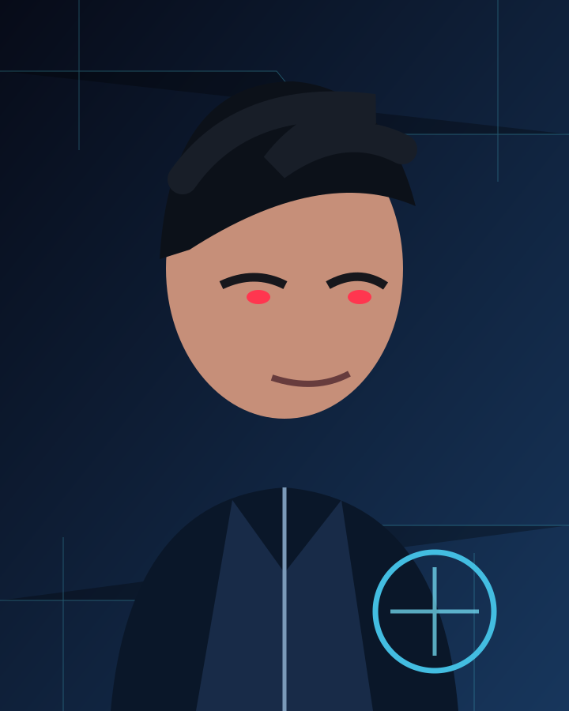
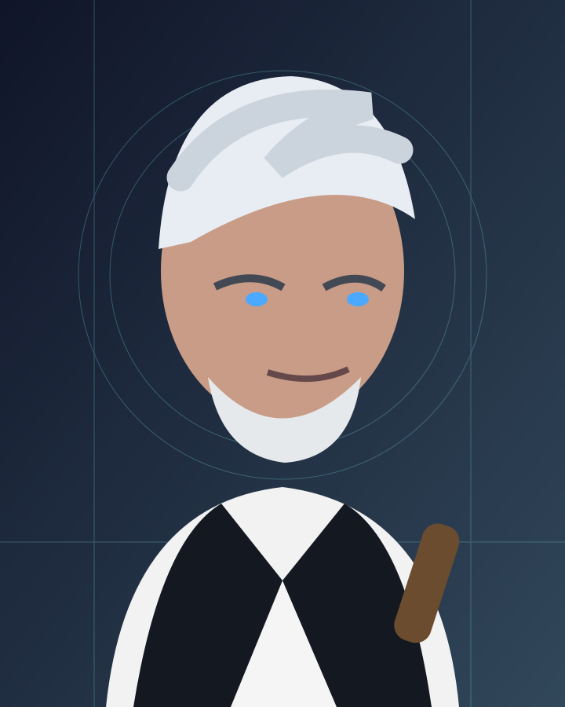
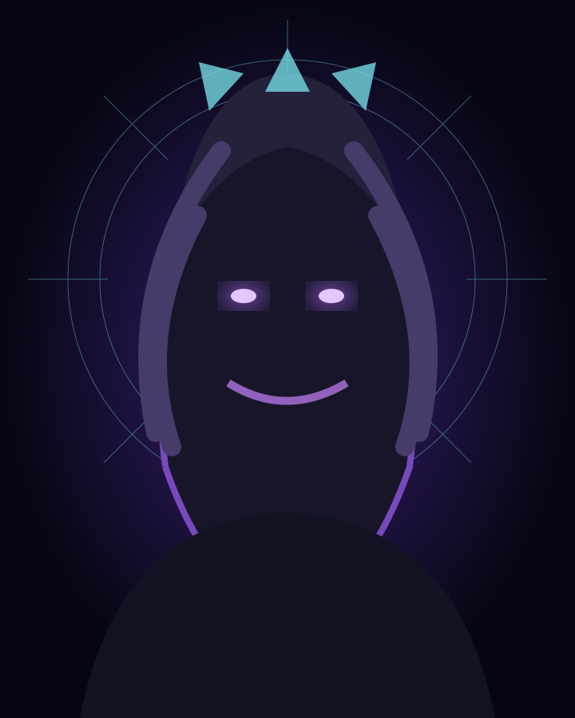

Uma tempestade roxa. Dois antigos amigos. Uma cidade à beira do impossível.
Confronto no colégioO poder da tempestadeCinco mercenários na rua
Leitura
O Brilho da Tempestade
Leia o capítulo 1 completo, com todas as falas e batalhas do texto original.
Interativo
Escolhas sob a chuva
Experimente uma cena alternativa inspirada no confronto de Caleb e Oliver.
Desafio
Você conhece a tempestade?
Responda a seis perguntas sobre os acontecimentos do capítulo 1.
Esta versão inclui o capítulo 1 completo fornecido pelo autor. As ilustrações são conceituais e o jogo é uma cena alternativa, sem alterar o cânone do livro.
Biblioteca • capítulo 1
O Brilho da Tempestade
Voz em português do Android
Jogo narrativo • cena alternativa
Entre o trovão e o silêncio
As escolhas são uma brincadeira inspirada na obra, não acontecimentos oficiais do livro.
Conheça o universo
Personagens
Agora os personagens aparecem com artes visuais dentro do aplicativo.
Protagonista

Caleb
17 anos. Carrega a tempestade dentro de si. Estratégico, leal e intenso, é o centro do conflito que move Sinapse Final.
Rival

Oliver
18 anos. Calculista, brilhante e ambicioso. Antigo amigo de Caleb, agora segue um caminho sombrio e determinado.
Mistério

Eron
Pesquisador e líder enigmático. Uma figura perigosa e inteligente, ligada aos segredos por trás dos poderes e da tempestade.
Divindade

Kaelum
O deus da tempestade. Misterioso, poderoso e ambíguo, é uma presença maior que atravessa o destino de Caleb e de todo o mundo.